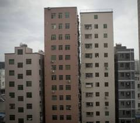
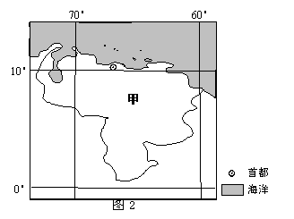
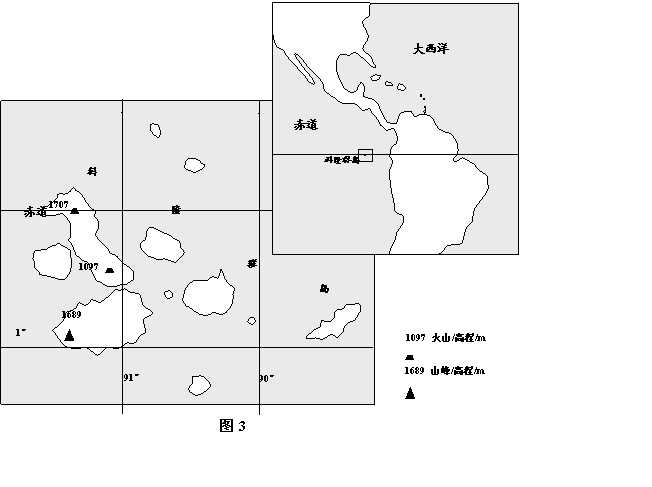
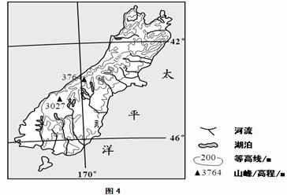
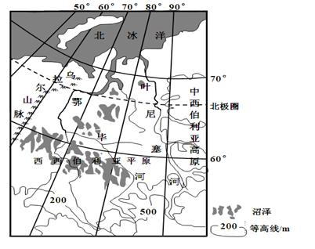
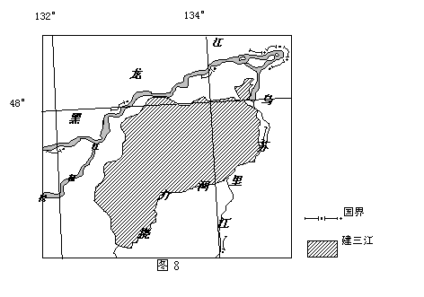
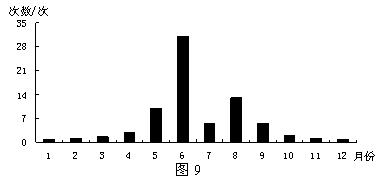

None - Fade - Slide - Convex - Concave - Zoom
选择班级
幻灯片样式
Black (default) -
White -
League -
Sky -
Beige -
Simple
Serif -
Blood -
Night -
Moon -
Solarized
珠江三角洲某中心城市周边的农民竞相在自家的宅基地建起了“握手楼”（图1）据此完成1～2题。
1．农民建“握手楼”的直接目的是
A．吸引外来人口定居
B．吸引城市周末度假
C．增加自住房面积
D．出租房屋增加收入
【解析】 1、材料信息：地址位于珠三角洲城市周边，人物为农民，事物为“握手楼”（图片信息显示楼较高、密集）。珠三角经济发达、劳动力需求量大，外地来的打工仔非常多，当地农民建房屋目的肯定是为了自己的经济发展，答案很明显为D.出租房屋增加收入。AB选项太伟大，C选项太土豪（浪费）。
2．“握手楼”的修建反映该中心城市
A．居住人口减少
B．城市房价昂贵
C．人居环境恶化
D．城区不断扩大
【解析】 2、城市中的商品房（毛坯）价格约20000元一平米，价格昂贵，打工仔基本买（租）不起；在城市周边的农民自建楼价格相对较低，而且交通也较为便利，与打工仔的工资收入和生活开支契合，因此打工仔多选择郊区农民的“握手楼”，当地农民也就成为包租公（婆）。AC选项的情况为逆城市化现象，中国目前处于郊区城市化阶段，城区面积不断扩大，因此D错误。
【考察能力】读图能力（获取信息）：观察图片反映事物的特征（大小、高低、数量、密度） 【地理原理】 1、人们从事第一产业、第二产业（建房）、第三产业（出租房）的目的都是为了经济发展、社会发展、生态发展。 2、我国城市化过程中出现的问题（住房、交通、就业、污染、人口），及其解决措施。
总部位于江苏徐州（约34°N，117°E）的某企业承接了家国（图2）价值7.446亿美元的工程机械订单。据此完成3-5题。
3.甲国位于（ ）
A.欧洲
B.非洲
C.北美洲
D.南美洲
【解析】材料显示了徐州的经纬度（约34°N，117°E），地图显示了甲国的经纬度（西经60—70°，赤道—北纬10°） 3、根据甲国的经纬度位置可确定是南美洲。
4.2011年6月21日，该订单的首批产品从徐州发货。这一日，徐州与甲国首都相比（ ）
A.徐州的正午太阳高度较高
B.徐州的白昼较短
C.两地正午物影方向相同
D.两地日出方位角相同
【解析】4、6月21日，太阳直射北回归线附近，徐州距离太阳直射点更近，因此正午太阳高度角更大。（徐州的正午太阳高度为90°-（34°N-23.5°N）=79.5°，甲国首都的正午太阳高度为90°-（23.5°N-10°N）=76.5°），因此A正确。6月为北半球夏季，北半球越往北白昼越长，徐州位于甲国首都北方、白昼更长，B错。太阳直射点为徐州的南方，徐州正午影子朝北，太阳直射点位于甲国首都的北方，其影子朝南，C错。夏半年北半球（北极点除外）太阳东北升、西北落，但具体方位角度不同。
5.该批产品运往甲过，最近的海上航线需经
A.好望角
B.苏伊士运河
C.巴拿马运河
D.麦哲伦海峡
5、徐州（约34°N，117°E）与甲国首都（10°N、67°W）共同位于北半球，徐州往东经度相差176°<180°，为劣弧、距离短，徐州往西经度相差184°>180°，为优弧、距离长。因此最短航线应该向东航行、穿越太平洋，经过巴拿马运河进入大西洋。而非向西航行经过印度洋再抵达大西洋，因此不会经过ABD三处。
【考察能力】 定位能力：根据材料和地图：明确两地的地理位置（经纬度位置、海陆位置）计算能力：不同地点正午太阳高度的计算、 定向能力：通过计算经度差，确定最短航线（大圆劣弧）的方向 【地理原理】 地球运动的意义（正午太阳高度的计算、正午太阳方位与影子的关系、昼夜长短的判断、 太阳在天空中方位的变化）地球的形状（最短航线）
降水在生态系统中被分为蓝水和绿水，蓝水是形成径流的部分（包括地表径流和地下径流）；绿水是被蒸发（腾）的部分，其中被植物蒸腾的部分称为生产性绿水，被蒸发的部分被称为非生产性绿水
6.下列河流中，绿水比例最大的是
A.塔里木河流域
B.长江流域
C.雅鲁藏布江流域
D.黑龙江流域
【解析】材料信息显示：降水落地面后，一部分形成径流（蓝水），另一部分蒸发（绿水）。蒸发分为植物蒸腾（生产性绿水）和蒸发（非生产性绿水）两部分。 6、绿水比例是指（蒸发量）除以（径流量+蒸发量）的数值，绿水比例最大是指蒸发量大、径流量小，位于西北内陆（干旱）地区的塔里木河蒸发比例最大。A正确。
7.在干旱和半干旱地区，下列措施中，使绿水中生产性绿水比重提高最多的是
A.水田改旱田
B.植树造林
C.覆膜种植农作物
D.修建梯田
【解析】7、生产性绿水比重是指（植物蒸腾）除以（植物蒸腾+蒸发），覆盖地膜可以保湿、保温、保土，减少蒸发，特别是在干旱和半干旱地区作用显著，因此C正确。而且ABD均不符合在干旱半干旱地区因地制宜发展农业的原则。
【考察能力】 获取信息并将其分类的能力比例数值的计算能力 【地理原理】 水循环的过程和环节河流的水文特征 农业生产技术（覆盖地膜）对区位因素（水源、气候）的改良。
8. 科隆群岛特有动物种属比例较大。形成这一现象的地理条件是该群岛
A. 地处赤道附近
B. 远离大陆
C. 构造运动强烈
D. 地形复杂
【解析】 地图信息显示科隆群岛位于赤道附近，太平洋东部、距离南美洲大陆较远，多火山。 8、结合初中知识（澳大利亚被称为“世界活化石博物馆”），可知特有动物比例大的成因是远离大陆、远离危险，动物进化缓慢而古老。B正确。火山为干扰信息，构造运动造山、造岛屿能力一流，但不造动物。海底火山附近有特有生物，但陆地上没有什么特有的火山动物，有的话只有红孩儿一人。
9. 科隆群岛是耐寒的企鹅和喜暖的鬣蜥的共同家园，主要因为该群岛
A. 气温日较差大
B. 处在动物迁徙路线上
C. 地处热带但受寒流影响
D. 气候垂直差异显著
【解析】 9、企鹅原本生活在南极地区，顺西风漂流、秘鲁寒流等洋流漂流至科隆群岛，发现气候适宜（不是很热）、鱼类丰富，于是在此定居（逆洋流回南极不太现实）。老鼠、蜥蜴喜暖，出现在热带地区很科学。C正确。
【考察能力】 读图能力（定位、估算距离）回顾初中地理知识的能力 【地理原理】洋流对气候的影响
图4示意某岛的地理位置。读读图4，完成10～11题。
10. 图示岛屿西南部降水丰沛，主要是因为 ①盛行西风 ②地形抬升 ③暖流增湿 ④反气旋活跃
A. ①②
B. ②③
C. ③④
D. ①④
【解析】 地图信息显示该岛纬度大部分位于南纬42°—46°，地处太平洋中，中部山脉海拔较高（超过3000米）、大致呈东北—西南走向分布，河流、湖泊众多。 10、南纬42°—46°，地处西风带，来自海洋的湿润气流受高达山脉阻挡抬升，形成地形雨，因此降水丰富。岛屿西南部受西风漂流（寒流）影响较大，而非暖流。反气旋（高压）控制、降水少，错误。
11. 下列农业生产类型中，最适宜在图示岛屿发展的是
A. 水田农业
B.迁移农业
C. 种植园农业
D.畜牧业
11、降水丰沛、气候温和（南纬42°—46°，岛屿、气候海洋性强），多山地，适合草类生长，因地制宜发展畜牧业最合适。如果能判断出是新西兰，则直接选D。
【考察能力】读图能力（定位、定气压带风带、洋流、判断地形、根据河流和湖泊的数量判断降水的多少） 【地理原理】 降水的影响因素（纬度、海陆、地形、大气环流、洋流、） 农业地域类型的分布
36. （22分）阅读图文材料，完成下列要求。
36．（22分）河流的侵蚀、沉积及沼泽的吸收（附）影响河流泥沙和营养物质含量，水体中营养物质含量影响浮游生物量，与水温共同制约鱼类资源数量。图7所示的西西伯利亚平原地势低平，冻土发育，沼泽广布
（1）分析西西伯利亚平原沼泽广布的原因（8分）
（1）（8分） 地势低平，排水不畅； 气温低，蒸发量小； 下部土层冻结，阻滞水分下渗； （凌汛等导致）河水泛滥
（2）分析叶尼塞河泥沙含量较多，而鄂毕河泥沙含量较少的原因。（6分）
（2）（6分） 叶尼塞河支流多流经中西伯利亚高原，（河床比降大）流速快，侵蚀强，增加了河流含沙量。鄂毕河主要流经平原，流速慢，泥沙沉积，含沙量小
（3）通常，大河河口的鱼类资源丰富，但鄂毕河河口鱼类资源相对较少。说明鄂毕河河口鱼类资源较少的原因。（8分）
（3）（8分） 鄂毕河河口区纬度高，水温低，鱼类生长慢。 结冰期长，鱼类存活率偏低。 鄂毕河流经沼泽，营养物质被植物吸收，河水中营养物质严重缺乏，不利于浮游生物生长。北冰洋营养物质和饵料较为贫乏。
37.（24分）阅读图文材料，完成下列要求。
建三江位于三江平原腹地，于1957年开始垦荒，日前面积1.24万平方千米，人口20多万，这里空气清新，水源丰富且水质优良，土壤肥沃。近年来，建三江重点种植水稻，有“中国绿色米都”之称。建三江采用现代技术科学生产，如定点监测土壤肥力并精准施肥。图8示意建三江的位置和范围。
（1）分析三江平原环境质量优良的原因（6分）
（1）（6分） 开垦历史短，人类对环境的影响较弱； 地广人稀，工矿业、城镇、交通车辆等较少， 人类活动排放的废弃物（废气、废水、废渣）等较少，环境污染轻微
（2）分析建三江农作物病虫害较少的气候原因（6分）
（2）（6分） 纬度高（48°N附近），冬季寒冷而漫长，害虫（虫卵）不易越冬； 夏季气温日较差大，日低温较低，不利于虫害生存和繁殖
（3）简述建三江水稻种植过程中化肥施用量较少的原因（4分）
（3）（4分） 土壤肥沃（肥力高）； 精准施肥。 控制施肥量
（4）建三江被称为“中国绿色米都”。请说明建三江获此美誉的理由（8分）
（4）（8分） 环境质量优良（污染少）。 化肥、农药施用量少，生产绿色稻米； 成产技术先进，具有示范作用； 生产规模大；单 位面积产量高，总产量大； 商品率高等。
某学习小组在探讨“老工业区如何转型”的活动中，发现德国鲁尔区在转型过程中，利用原有的生产设备等工业遗产资源，开发了能够吸引人们了解工业文明和工业化历史，具有独特观光、休闲等功能的工业遗产旅游产品。
提出老工业区的工业遗产资源，并设计老工业区工业遗产旅游项目。
工业遗产资源： 老工业区的厂房、车间等建筑，一级生产设备、公益、流程、管理等工业遗产和遗迹。 工业遗产旅游项目： 参观老工业区的厂房、车间遗迹工业遗产博物馆； 利用多媒体手段再现原生产生活实景； 体验原生产流程等； 在由老厂房改造成的餐厅、酒吧、画廊等场所消费、休憩。
43，（10分）自然灾害与防治
福建低山丘陵区是崩塌、滑坡和泥石流等地质灾害的多发区，图9示意该区域1990~2006年地质灾害各月多年平均发生的次数。
概况该区域地质灾害月际分布特点，说明6月、7月地质灾害发生次数差异的自然原因。
特点：各月都有地质灾害发生， （夏季多，冬季少）5~6月相对集中，期中6月份发生次数最多。 原因：福建省低山丘陵区属亚热带季风气候区，6月，降水多，且多暴雨，易引发地质灾害；7月，受副热带高气压带控制，降水少，地质灾害发生次数减少。
44、（10分）环境保护
中华秋沙鸭为我国一级重点保护鸟类，目前全国只有1000只左右，中华秋沙鸭生活在河流与小型湖泊等湿地中，主要以淡水鱼、虾等为食。以长白山某河流作为繁殖地的中华秋沙鸭种群，春季为50只左右，秋季迁徙时，数量增至200只左右。但只有近百只到达赣东北的越冬池，二第二年春季只有50余只返回繁殖地。
分析中华秋沙鸭在迁徙途中不断死亡，导致数量减少的可能原因，并提出保护对策。
可能原因：迁徙路上缺少湿地等休憩和觅食地，疲劳饥饿致死； 食用了被污染的鱼虾；人祸动物猎杀等。 保护对策；在迁徙路上建设与恢复湿地，使湿地间距小于单日迁徙距离； 治理水体污染； 严禁猎杀； 在迁徙路线上建立观测点，组织志愿者观察保护； 做好保护中华秋沙鸭的宣传工作等。